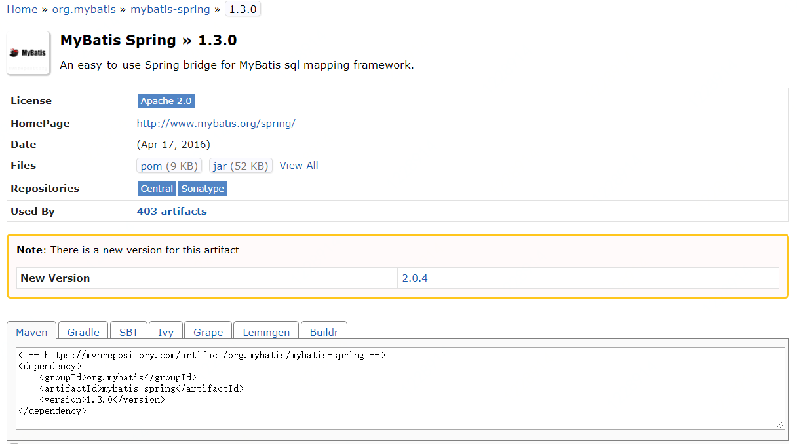
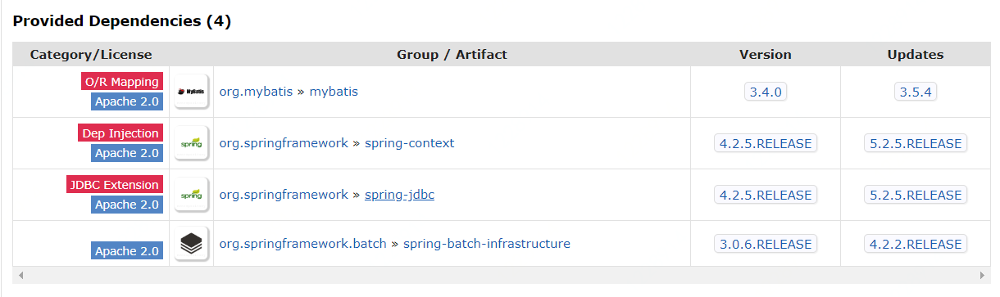

最近遇到一个很头疼的问题，在一次合代码后，系统启不来了，确切的说，本地可以起来，生成容器镜像后启不来，报了一大堆创建Spring bean异常，本地能启动，镜像启不来，这是不是很怀疑人生，通过各种排除法手段合并代码、删除代码，但就是不行，第二天又重新倒腾了一下（merge），好了，也不知道为啥就好了。
接着又有新需求了，从master上拉新的分支，吭哧吭哧干完了，编译、打包、生成镜像、部署、启动，完，又出现那个熟悉的异常了，我始终都相信代码不会说谎，绝不会是偶然，所以我决定好好找找原因。
1 | Related cause: org.springframework.beans.factory.BeanCreationException: Error creating bean with name 'meteringLastBillingRecordMapper' defined in URL [jar:file:/export/Packages/jcloud-newbilling/feature-settlement-info-add-fee-20200423-c4b21536-0423144327/webapps/ROOT/WEB-INF/lib/billing-dao-1.0-SNAPSHOT.jar!/com/jcloud/billing/mapper_metering/MeteringLastBillingRecordMapper.class]: Cannot resolve reference to bean 'meteringSqlSessionFactory' while setting bean property 'sqlSessionFactory'; nested exception is org.springframework.beans.factory.BeanCreationException: Error creating bean with name 'meteringSqlSessionFactory': FactoryBean threw exception on object creation; nested exception is java.lang.IllegalArgumentException: Property 'dataSource' is required |
观察异常信息后，都是创建bean的错误，前提是所有的bean都被扫描到了，有一个现象是本地虽然能起来，但日志里也有WARN信息，信息也是关于创建bean的，决定升级下Spring试试，从4.3.2->5.2.5，完事后镜像启动，还是报错；
再观察异常信息后，发现最后都是以sharding-JDBC相关的持久层mapper结束的，所以从sharding-JDBC数据源的xml开始，把原来的配置文件备份下，重新搞一个新的，并且跟官方的shardingsphere-example对比，写完后，再镜像启动，还是报错；
再看shardingsphere-example后，持久层是用@Mapper注解，项目工程是用@Repository注解，难道是这个问题吗？到了这个份上，可能你觉得什么都有可能是错的，那就试一下吧，持久层注解改成@Mapper，咦？没有这个注解，项目工程的mybatis包版本是3.2.5，版本低，还没有这个注解，那就升下级，升级到3.4.2，顺便把mybatis-spring也升下级，1.2.1->1.3.0，完事后镜像启动，好了，很鸡冻。
此时由恍惚变得清醒了点，其实跟注解是@Mapper没啥关系，主要还是很mybatis、mybatis-spring版本低有关，重新把@Mapper换成@Repository后，镜像启动，也没毛病。
所以最终还是mybatis、mybatis-spring的版本和spring的版本不匹配导致，至于在本地启动可以，在镜像启动不行，这个问题还是无解，可能是跟环境有关

